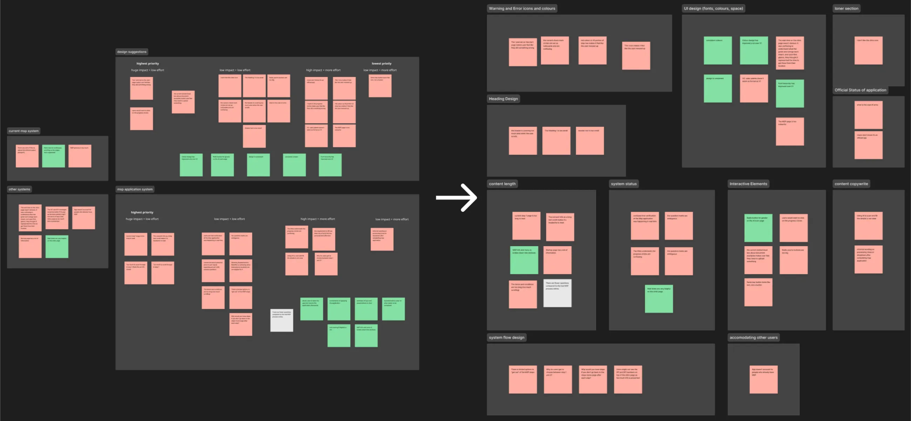

What it is
For SparkJam (a design jam), our team chose to center our project in the speculative design space. We built a strong narrative foundation imagining a future lunar company “Astra” that has a monopoly on the moon. From that future, we designed a set of physical objects (a restaurant menu and a credit card) and an augmented reality interface that lunar citizens use everyday.
Our goal for this project was .
Content and visual design, system logic, and user testing were all expected of us. Highlights of my work included developing the underlying interface system of the MSP form, conducting thematic analysis on user study data, and creating most of the application in ProtoPie.
Final design

The issue with qualitative interviews
Three quarters through the project, user testing was conducted with our first prototype. After my teammates conducted the user study, we had several pages of interview notes that contained tangents, overly general remarks, and other fluff. We needed to get to the juicy, tangible praise and criticism that interviewees provided so we can understand the state of our prototype. I was tasked to return valuable, actionable insights from the study’s qualitative interview notes.
I chose to use thematic analysis as we wanted to identify common issues users had with the app and understand them as high-level problems within our design strategies of the app. Thematic analysis’s benefits of coding, theming, and defining problems helped in our goals.
Notes from user testing interviews

Thematic analysis
I began to copy the raw interview notes to a Figma document, chopping multi-topic sentences into single topic snippets and grouping similar quotes together, coding the information. I then abstracted the data into separate themes of the application’s systems and design. This did not yield any significant insights as each theme encompassed too many data points, resulting in overly generalized outcomes. However, I found that many of the children of each theme shared underlying similarities of visual design, content design and strategy, and system logic. So, I took the initial sections and broke them down into these smaller categories.
Two iterations of thematic analysis theming

Reflection
This revealed some interesting outcomes: some themes were very specific (for example, warning and error icons and colours) while others were very generalized (e.g. UI design). This level of detail of the themes showed us the most common issues that were brought up and allowed us to prioritize certain issues. Finally, to visualize this in a more cohesive manner, I placed these themes them into a Venn diagram of design, system, and content. This allowed us to communicate our issues clearly in the weekly presentation and outline solutions we will use to address each of these themes.
The outcome of the thematic analysis helped us streamline what iterations needed to be prioritized leading up to the deadline of the project.